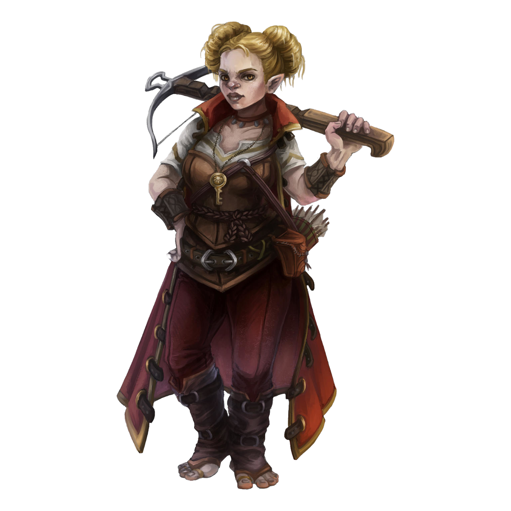

Rachel Tokens
Journal Entry
Sat, 7 Sep 2024 20:06:20 +0200
Heya,

Depending on what kind of tokens we're going with, I have three options:
Portrait with Frame:
Full size image:


Small-creature image:
We'll go with whatever looks best as a token.
Rolo "Putting the DM to work is always a great idea"
Journal Entry
Sun, 8 Sep 2024 12:29:27 -0400
Looks great! Thanks I'll load them up before next session.
Journal Entry
Tue, 10 Sep 2024 10:04:25 +0200
Looking through the Rogue description, I realize that I'm supposed to have a shortbow (25g) instead of a light crossbow (25g). I took the Crossbow literally because my token's carrying one.
They cost the same, Crossbow does a little bit more damage (1d8 vs 1d6) but has the "Loading" property (which at this level seems to be no drawback at all).
May I take the Crossbow instead?
Just for completeness, my starting gear is:
Rapier
Explorer's Pack
Leather Armor
2x Daggers (one each in those leg warmer things she's wearing)
Thieves' Tools (what? what? Ok so sometimes I lose keys)*
Painter's Tools
Letter of Introduction from the Portraiter's Guild
Traveler's Clothes
Pouch w 15 gold
* Actually, check this out:
Thieves' Tools (Tools)
This set of tools includes a small file, a set of lock picks, a small mirror mounted on a metal handle, a set of narrow-bladed scissors, and a pair of pliers. Proficiency with these tools lets you add your proficiency bonus to any ability checks you make to disarm traps or open locks.
Weight: 1
This set of tools includes a small file, a set of lock picks, a small mirror mounted on a metal handle, a set of narrow-bladed scissors, and a pair of pliers. Proficiency with these tools lets you add your proficiency bonus to any ability checks you make to disarm traps or open locks.
Weight: 1
That's basically a grooming kit. "Lock picks" sure look a lot like various assorted hair pins. Just because I like to groom my toenails like a civilized person doesn't make me a thief!
Journal Entry
Tue, 10 Sep 2024 19:13:04 -0400
Crossbow is fine. If you take 20 minutes each day you may arrange your thieves tools in such a manner that they require a DC 15 perception check to identify them as anything other than a cosmetics, however doing so causes them to be slower to prepare and they take a full round before they're ready to use. Your choice each day to prepare them in this manner or not. This is specific to this bag, which I'll consider a heirloom item of some sort.
Journal Entry
Wed, 11 Sep 2024 11:26:11 +0200
Awesome and thank you!
Rachel will do this by default every morning unless rushed for some reason. Heck, she'll take 30 minutes and actually use it as a beauty kit, like a civilized person. I don't just look this good by accident, you know.
If the price I pay for beauty is, maaaaaybe, a little bit of stress when I have to unpack my handbag to find the hairpin which works best as a lockpick, well, so be it.